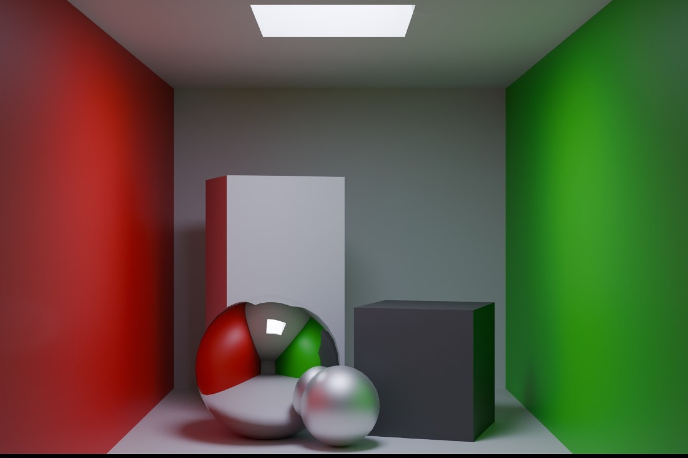

Blender was created by Ton Roosendaal, a Dutch art director and self-taught software developer. Attracted to all things technical and creative, Roosendaal began a degree in Industrial Design, but dropped out in order to start his own 3D animation studio, NeoGeo, in 1989 (the video game console of the same name appeared a year later). Roosendaal wrote the first source files titled “Blender” on the 2nd of January, 1994, still considered Blender’s official birthday. Roosendaal invested his savings in a Silicon Graphics workstation, Costing the equivalent of thirty thousand US dollars, this computer led to Blender 1.0. At the time, 3D was considered commercially uninteresting. However, Roosendaal had fallen in love with what he describes as its “magical ability to create a whole world in a computer.” So when NeoGeo closed, he and partner Frank van Beek founded a new company focused on further developing and marketing Blender. Not a Number (NaN) opened its doors in June 1998, distributing Blender under a freemium pricing strategy: the software was free to download, with NaN selling keys to unlock more advanced features. Not long after the opening, The company closed in early 2002. With NaN’s demise, Blender’s development ceased. Unable to buy the rights from NaN’s backers, Roosendaal opted for a novel plan. In May of 2002, he started a non-profit, the Blender Foundation, with the intention of making Blender open-source. His hope was to create a public monument to Blender, and give everyone who had worked on the Blender project the chance to use it for their portfolios. Thanks to Blender’s community of 250,000 users, the Blender Foundation was able to raise one hundred and ten thousand euros in just seven weeks — sufficient to regain Blender from its investors. On Sunday, October 13th, 2002, Blender was released under the terms of the GNU General Public Licence, the strictest possible open-source contract. Not only would Blender be free, but its source code would remain free, forever, to be used for any purpose whatsoever. Going forward, Blender hopes to become a sustainable, future proof organization, dedicated to furthering its open-source philosophy, its values of curiosity and innovation, a commitment to technical excellence, and increasingly ambitious creative goals.